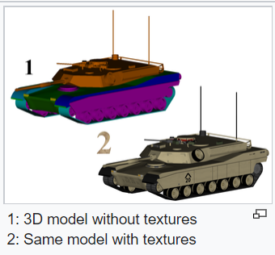

Texture mapping is a method for defining high frequency detail, surface texture, or color information on a computer-generated graphic or 3D model.
Texture mapping originally referred to diffuse mapping, a method that simply mapped pixels from a texture to a 3D surface ("wrapping" the image around the object). In recent decades, the advent of multi-pass rendering, multitexturing, mipmaps, and more complex mappings such as height mapping, bump mapping, normal mapping, displacement mapping, reflection mapping, specular mapping, occlusion mapping, and many other variations on the technique (controlled by a materials system) have made it possible to simulate near-photorealism in real time by vastly reducing the number of polygons and lighting calculations needed to construct a realistic and functional 3D scene.

We can Texture Mapping in any picture. Here a cube already Texture Mapping.(**If you cannot see picture, opne it on internet explorer browswer**)
push 'Rotate!' button, then you can see cube is rotate. if you push again, cube is stop.